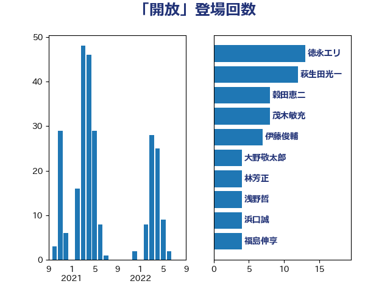

単語「開放」

| 徳永エリ | 立憲民主党 | 13 回 |
| 萩生田光一 | 自由民主党 | 12 回 |
| 穀田恵二 | 日本共産党 | 8 回 |
| 茂木敏充 | 自由民主党 | 8 回 |
| 伊藤俊輔 | 立憲民主党 | 7 回 |
| 大野敬太郎 | 自由民主党 | 4 回 |
| 林芳正 | 自由民主党 | 4 回 |
| 浅野哲 | 国民民主党 | 4 回 |
| 浜口誠 | 国民民主党 | 4 回 |
| 福島伸享 | 無所属 | 4 回 |
| 大西健介 | 立憲民主党 | 3 回 |
| 室井邦彦 | 日本維新の会 | 3 回 |
| 斉藤鉄夫 | 公明党 | 3 回 |
| 落合貴之 | 立憲民主党 | 3 回 |
| 足立康史 | 日本維新の会 | 3 回 |
| 音喜多駿 | 日本維新の会 | 3 回 |
| 井上哲士 | 日本共産党 | 2 回 |
| 伊藤岳 | 日本共産党 | 2 回 |
| 古賀之士 | 立憲民主党 | 2 回 |
| 古賀友一郎 | 自由民主党 | 2 回 |
| 塩川鉄也 | 日本共産党 | 2 回 |
| 山崎誠 | 立憲民主党 | 2 回 |
| 岸信夫 | 自由民主党 | 2 回 |
| 末松信介 | 自由民主党 | 2 回 |
| 柳ヶ瀬裕文 | 日本維新の会 | 2 回 |
| 河野義博 | 公明党 | 2 回 |
| 田村憲久 | 自由民主党 | 2 回 |
| 笠井亮 | 日本共産党 | 2 回 |
| 緒方林太郎 | 無所属 | 2 回 |
| 菊田真紀子 | 立憲民主党 | 2 回 |
| 赤羽一嘉 | 公明党 | 2 回 |
| 三ッ林裕巳 | 自由民主党 | 1 回 |
| 三宅伸吾 | 自由民主党 | 1 回 |
| 串田誠一 | 日本維新の会 | 1 回 |
| 井上英孝 | 日本維新の会 | 1 回 |
| 伊藤孝恵 | 国民民主党 | 1 回 |
| 前川清成 | 日本維新の会 | 1 回 |
| 古屋範子 | 公明党 | 1 回 |
| 堀内詔子 | 自由民主党 | 1 回 |
| 塩崎彰久 | 自由民主党 | 1 回 |
| 大塚耕平 | 国民民主党 | 1 回 |
| 大島敦 | 立憲民主党 | 1 回 |
| 守島正 | 日本維新の会 | 1 回 |
| 宮本徹 | 日本共産党 | 1 回 |
| 寺田学 | 立憲民主党 | 1 回 |
| 山本剛正 | 日本維新の会 | 1 回 |
| 山添拓 | 日本共産党 | 1 回 |
| 山田俊男 | 自由民主党 | 1 回 |
| 山田宏 | 自由民主党 | 1 回 |
| 岬麻紀 | 日本維新の会 | 1 回 |
| 斎藤洋明 | 自由民主党 | 1 回 |
| 新妻秀規 | 公明党 | 1 回 |
| 日下正喜 | 公明党 | 1 回 |
| 本田顕子 | 自由民主党 | 1 回 |
| 杉田水脈 | 自由民主党 | 1 回 |
| 松下新平 | 自由民主党 | 1 回 |
| 枝野幸男 | 立憲民主党 | 1 回 |
| 柴田巧 | 日本維新の会 | 1 回 |
| 柿沢未途 | 無所属 | 1 回 |
| 梅村みずほ | 日本維新の会 | 1 回 |
| 梅谷守 | 立憲民主党 | 1 回 |
| 梶山弘志 | 自由民主党 | 1 回 |
| 江島潔 | 自由民主党 | 1 回 |
| 河野太郎 | 自由民主党 | 1 回 |
| 浦野靖人 | 日本維新の会 | 1 回 |
| 牧原秀樹 | 自由民主党 | 1 回 |
| 玉木雄一郎 | 国民民主党 | 1 回 |
| 田名部匡代 | 立憲民主党 | 1 回 |
| 田村智子 | 日本共産党 | 1 回 |
| 石川香織 | 立憲民主党 | 1 回 |
| 磯崎仁彦 | 自由民主党 | 1 回 |
| 紙智子 | 日本共産党 | 1 回 |
| 緑川貴士 | 立憲民主党 | 1 回 |
| 自見はなこ | 自由民主党 | 1 回 |
| 菅義偉 | 自由民主党 | 1 回 |
| 逢沢一郎 | 自由民主党 | 1 回 |
| 里見隆治 | 公明党 | 1 回 |
| 鈴木俊一 | 自由民主党 | 1 回 |
| 鈴木淳司 | 自由民主党 | 1 回 |
| 青山繁晴 | 自由民主党 | 1 回 |
| 鬼木誠 | 立憲民主党 | 1 回 |
| 齋藤健 | 自由民主党 | 1 回 |